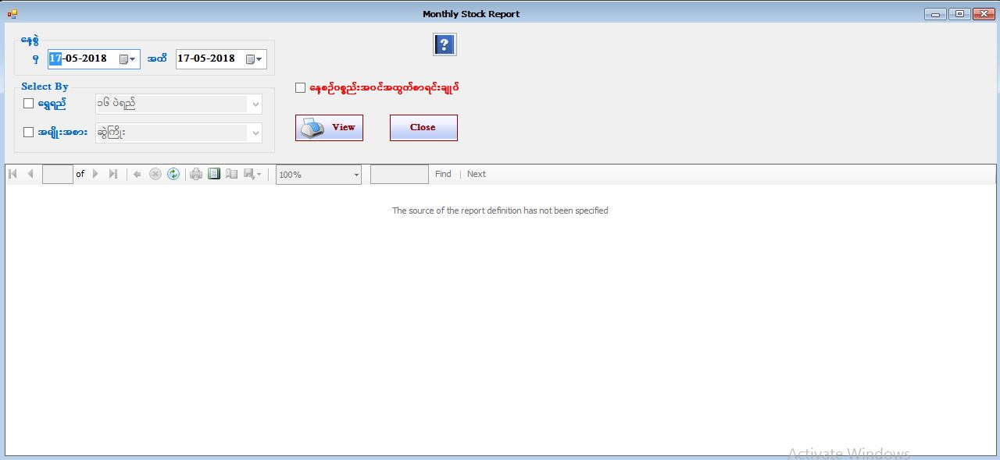

Stock Transaction Report

- Reports အောက်ရှိ Stock Transaction Report ကိုဖွင့်ပါ။
- Stock Transaction Reportသည် ဆိုင်ရှိပစ္စည်းအ၀င်အထွက်စာရင်းများကိုအသေးစိတ်ပြန်လည်ကြည့်ရှူသော Form ဖြစ်သည်။
- ကြည့်လိုသောနေ့စွဲ၊ ရွှေရည်၊ အမျိုးအစားကို ရွေးပြီး နေ့စဥ်ပစ္စည်းအ၀င်အထွက်စာရင်းချုပ်ကို on ထားပါက အသေးစိတ်ကိုပြပြီး OFF ထားပါက Summary ကိုပြမည်။View Button ကိုနှိပ်ပါ။
- Stock Transaction Report Form အား အသုံးပြုပြီးပါက Close Button ကိုနှိပ်၍ ပိတ်နိုင်ပါသည်။